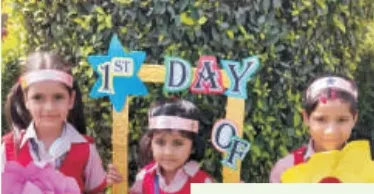
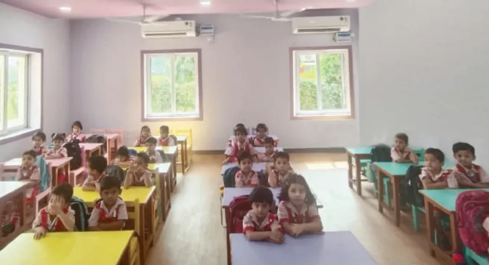
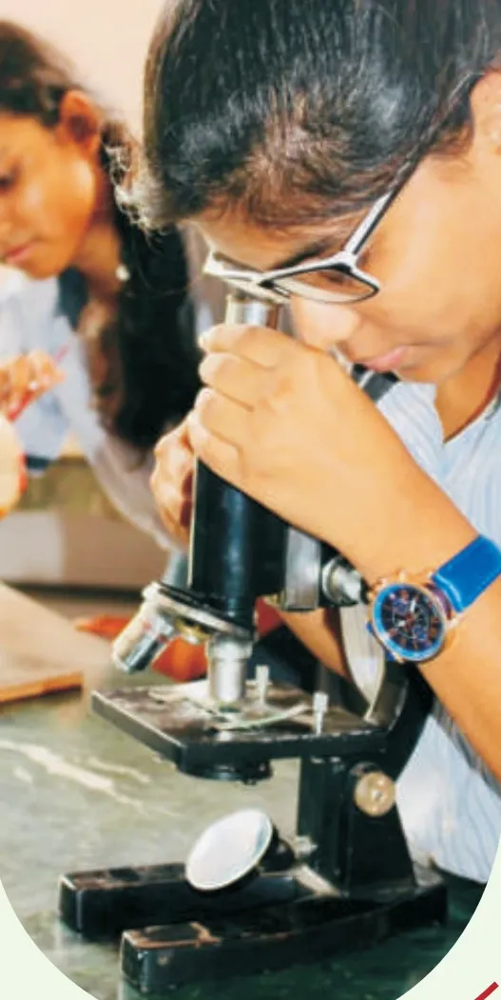

Join St. John's
Admissions for 2027–28 are open for Nursery and Class XI. Here is how it works, from your first question to your child's first day.

A seat is waiting for a little dancer.a young scientist.a chess champion.a storyteller.a future doctor.your child.
Six decades of children have grown up on these four green acres in Sector 7. Come and see where yours will learn, play, sing and make lifelong friends.
Since 1965CBSE affiliation 5300484 acres of green campusNursery to XII


Your child's day here
Pick a stage to see the school day and what children love most at that age.
Subjects in Classes IX and XI
Class IX has five main subjects plus one skill subject. In Class XI, your child picks one of four streams.
Five main subjects, plus one skill subject
Main subjects · everyone studies these
- English Language & Literature
- Hindi Course-A / Sanskrit
- Mathematics
- Science
- Social Science
Skill subject · choose one
- Artificial Intelligence
- Introduction to Financial Markets
- Information Technology
- Hindustani Music Vocal
- Painting
- Physical Activity Trainer
Pick one of four streams
Tap a stream to see its subjects.
Why families choose St. John's
Safe, green and busy with things to do, and still the school parents remember from their own childhood.
Four green acres
Lush grounds under CCTV, a huge playground, and RO water in every cooler.
Safe school buses
Every bus has CCTV, GPS, a speed governor and a female attendant.
Care on campus
A medicare centre with trained staff and an ambulance, and a full-time school counsellor.
Labs and libraries
Well-equipped science and computer labs, a senior library and an air-conditioned junior library.

In the labArts every week
Dance, music, drama, theatre, mime, mono acting, clay modelling and craft.
Two seminar auditoriums
Both air-conditioned, for seminars, workshops and skills training. A generator keeps the power on.
How to apply
Five steps, from first question to first day.
- EnquireFill the short form on this page. The office calls you back, usually the same working day.
- VisitSee the classrooms, grounds and stage, and meet the admissions team.
- RegisterRegister with a copy of the date of birth certificate and residence proof. Enter the name and date of birth exactly right: they cannot be changed later.
- DocumentsBring the originals for verification along with photocopies.
- ConfirmationAdmission is on merit. Selected Nursery names go up on the notice board at reception, and on this website.
Age criteria
Ages follow Haryana government and CBSE norms for the session. Haryana requires a child to be six for admission to Class I.
For 2027–28, ages are counted as on 31 March 2027.
| Class | Age on 31 March 2027 |
|---|---|
| Nursery | At least 3 years |
| LKG | At least 4 years |
| UKG | At least 5 years |
| Class I | 6 years or more |
| Class XI | On passing Class X |
Documents
Admission is valid only once the documents are submitted. Bring originals for verification with one set of photocopies.
Age on 31 March 2027
- Nursery
- 3 years or more
- LKG
- 4 years or more
- UKG
- 5 years or more
- Date of birth certificate
- Residence proof
- One passport-size photo of the child for the form
- One passport-size photo each of the mother and father, with the child
- Class XI: original Transfer Certificate from the previous school
- Class XI: Class IX result for provisional admission, then the Class X pass certificate and mark sheet once CBSE declares results
Fees
St. John's follows CBSE norms for fees. The fee structure for 2027–28 is shared with every family that enquires, and published in the parent corner.
Fee counter Monday to Friday, 8:15 AM to 12 PMSaturday 8:15 AM to 10:30 AM
Apart from the security deposit, charges paid at regular or provisional admission are not refunded when a child leaves.
Questions parents ask
Not answered here?
Call the office on 0129 224 2097 or 0129 224 8895, or send an enquiry and they will call you.
When does the admission process begin?
How are Nursery seats decided?
Can my child join in a class other than Nursery or XI?
How will I know if my child has been selected?
What happens if my child does not pass Class X after provisional admission to XI?
Does the school run buses?
Can the name or date of birth be corrected after the form is submitted?
What are the school timings?
Does submitting the form guarantee admission?
Come and see us.
Tell us about your child and choose a day. The office will call to confirm a time.
- A walk around the classrooms, labs, stage and grounds
- Time with the admissions team for your questions

Prefer to call?
The office is on 0129 224 2097 and 0129 224 8895.
Visit booked.
In this prototype, the enquiry now shows up in the school office view.